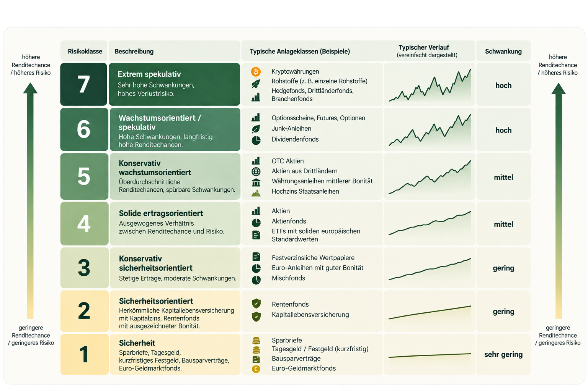

Anlagestrategie & Risikoprofil
Wie viel Risiko passt zu deiner Lebenssituation? Berechne eine beispielhafte Aktienquote und vergleiche sie mit der Faustregel „100 minus Alter“.
Die 7 Risikoklassen der Geldanlage
Die folgende Infografik zeigt die Einordnung typischer Anlagebeispiele. Die Risikoeinstufung eines konkreten Produkts hängt von seinen Eigenschaften ab.

Illustrative Darstellung. Die Zuordnung einzelner Produkte kann abweichen; die Verlaufslinien sind schematisch und keine Renditeprognose.
Wie sieht dein Risikoprofil aus?
Beantworte fünf Fragen. Du erhältst eine unverbindliche Modellaufteilung für langfristig investierbares Geld – keine persönliche Anlageberatung.
Deine beispielhafte Portfolioaufteilung
Dein Risikoprofil
Die Berechnung ist ein didaktisches Modell mit vereinfachten Gewichtungen, keine statistisch validierte Risikodiagnose. Die angezeigte Quote ist weder eine Renditeprognose noch eine individuell geeignete Empfehlung.
Was bedeutet die 100-minus-Alter-Regel?
Die klassische Faustregel zieht das Lebensalter von 100 ab. Mit 40 Jahren ergibt sich beispielsweise eine Aktienquote von 60 %. Die übrigen 40 % entfallen auf defensivere Anlagen. Die Formel ist leicht verständlich, berücksichtigt aber weder deine Rücklagen noch den Anlagehorizont oder die Risikobereitschaft.
| Alter | Aktien (Faustregel) | Defensiv |
|---|---|---|
| 20 | 80 % | 20 % |
| 30 | 70 % | 30 % |
| 40 | 60 % | 40 % |
| 50 | 50 % | 50 % |
| 60 | 40 % | 60 % |
| 70 | 30 % | 70 % |
Weitere Varianten wie 110 minus Alter oder 120 minus Alter setzen auf höhere Aktienquoten. Keine dieser Regeln ersetzt eine individuelle Planung.
Risikobereitschaft ist nicht Risikotragfähigkeit
Risikobereitschaft
Wie gut hältst du starke Schwankungen emotional aus? Selbst wenn du langfristig hohe Renditen anstrebst, solltest du die Wahrscheinlichkeit berücksichtigen, in einem Abschwung panisch zu verkaufen.
Risikotragfähigkeit
Wie viel Verlust kannst du finanziell verkraften, ohne deinen Lebensstandard oder wichtige Ziele zu gefährden? Entscheidend sind unter anderem Rücklagen, Schulden, Einkommen und der Zeitpunkt geplanter Ausgaben.
Wie setzt du die Aufteilung um?
Die passenden Anlageformen hängen von deinen Zielen, deinem Anlagehorizont und deiner Risikobereitschaft ab. Die folgende Übersicht hilft dir bei der Orientierung.
Defensiver Anteil
Stabilität, Liquidität und Planbarkeit stehen im Vordergrund.
TagesgeldFlexibel verfügbare RücklagenFestgeldFeste Laufzeit und vereinbarte ZinsenGeldmarkt-ETFsGeldmarktnahe Anlagen mit WertpapierrisikenStaatsanleihenVor allem kurze Laufzeiten und hohe BonitätRenditeorientierter Anteil
Unterschiedliche Ertragschancen, aber auch Kurs- und Verlustrisiken.
EinzelaktienDirekte Beteiligung an UnternehmenAktien-ETFs & IndexfondsBreite Streuung über viele UnternehmenImmobilien & REITsBörsennotierte ImmobilienanlagenUnternehmensanleihenZinsen mit Emittenten- und KursrisikenEdelmetalleGold und Silber zur DiversifikationKryptowährungenHohe Kursschwankungen und VerlustrisikenP2P-KrediteKredit-, Plattform- und LiquiditätsrisikenDie Einordnung ist eine Orientierung und keine feste Risikoklasse: Auch defensive Anlagen können Risiken bergen. Edelmetalle erzielen keine laufenden Erträge; Anleihen unterscheiden sich je nach Laufzeit und Bonität.
Prüfe die Verteilung regelmäßig, etwa einmal jährlich, und passe sie an, wenn sich Lebensumstände oder Ziele verändern. Rebalancing kann dabei helfen, die gewünschte Risikoverteilung beizubehalten.